Metallityöt:
Nämä työt ovat karkeita ja selvästi alokkaan tekemiä tekeleitä!
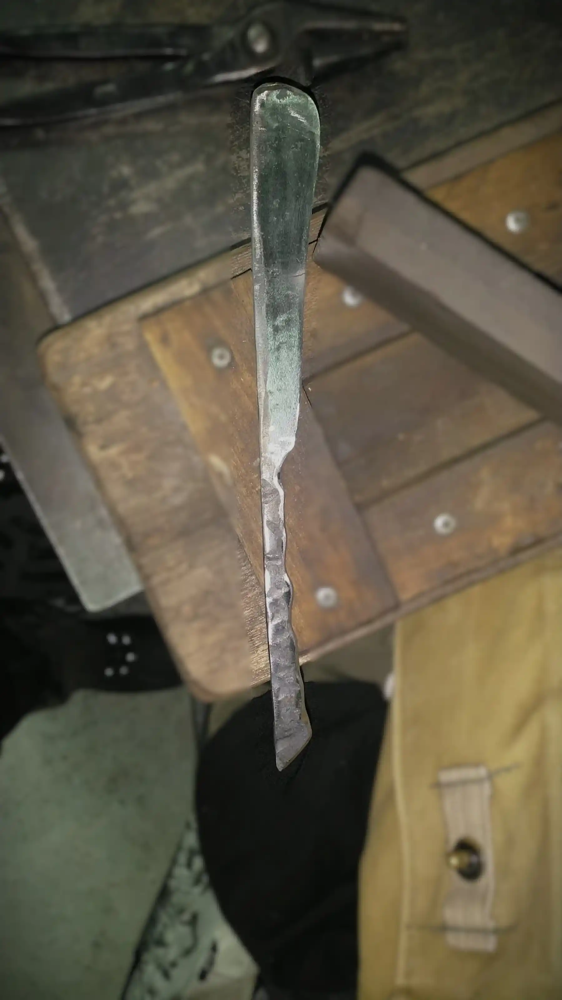
Voiveitsi
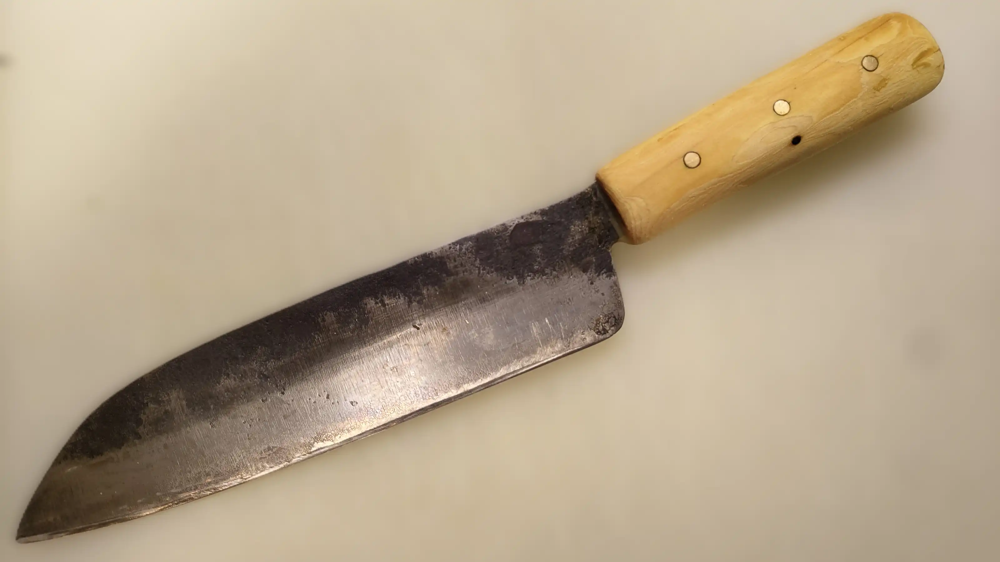
Keittiöveitsi
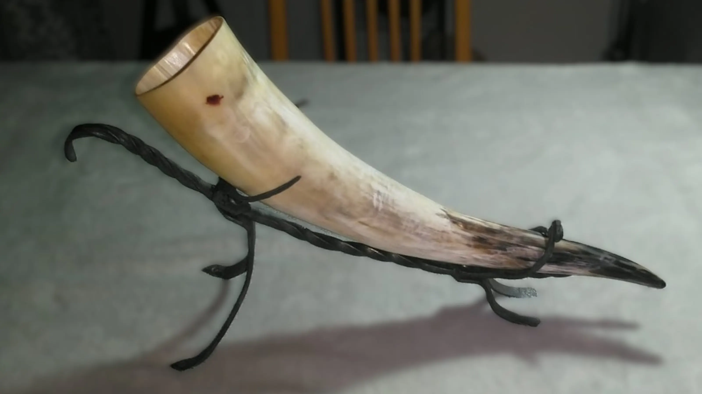
Juomasarven teline
Puutyöt:
keksi tähän jotain selitystä
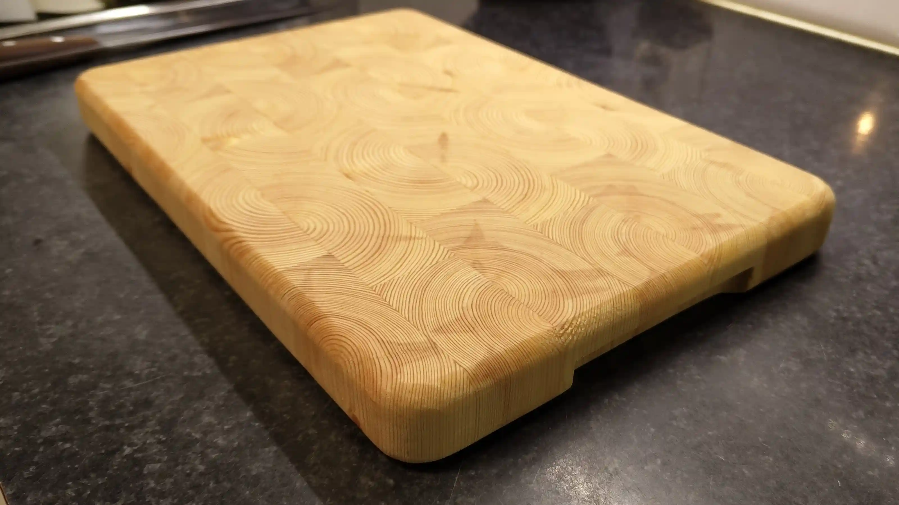
Mäntyinen leikkuulauta.
Koko n. 21 x 30 cm
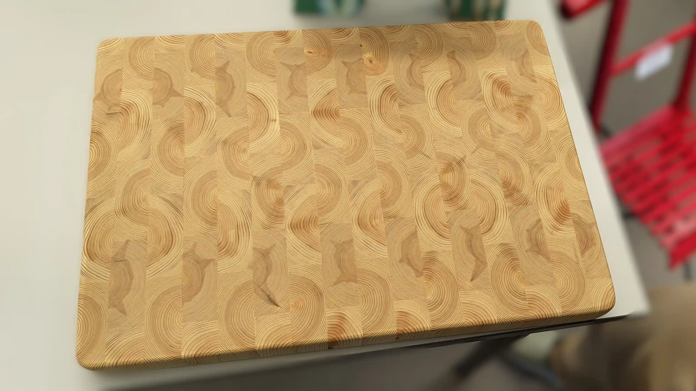
Mänty leikkuulauta.
Koko n. 39 x 56 x 5 cm
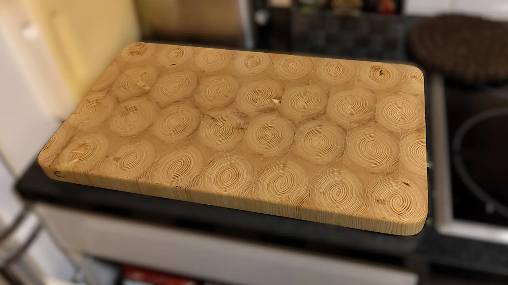
Mänty leikkuulauta.
Koko n. 32 x 59 x 5 cm
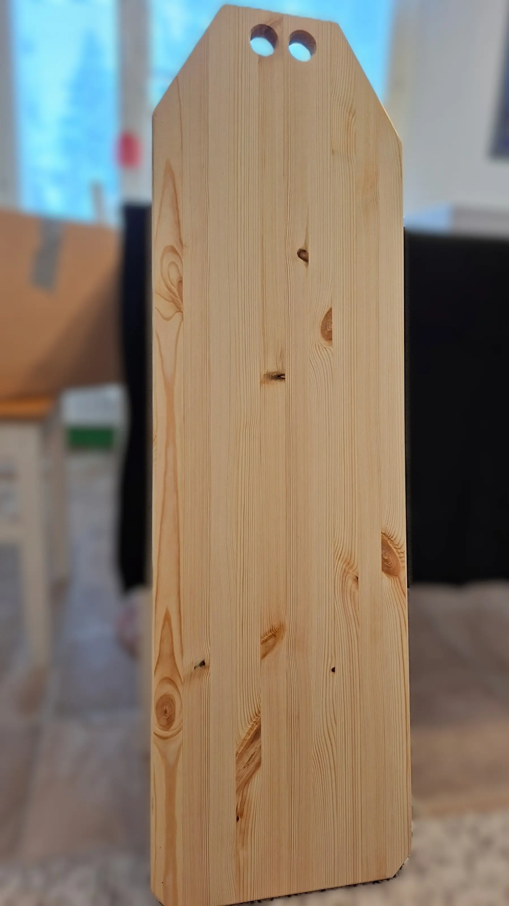
Mänty leikkuulauta kalan perkaukseen.
Koko n. 30 x 110 x 2 cm
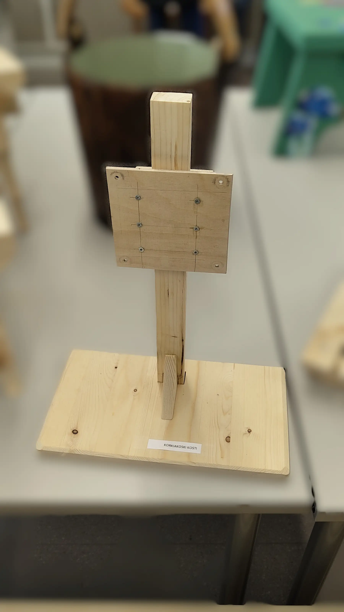
Puinen 100x100 VESA-näyttöteline.
Säädettävä korkeus ja tukevahko!
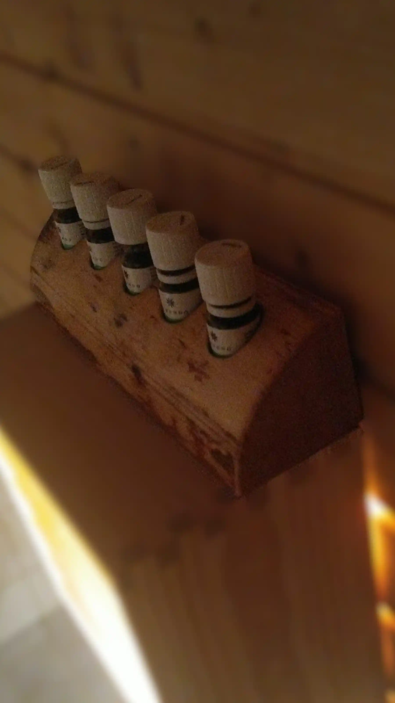
Koivuklapista tehty saunatuoksu teline.
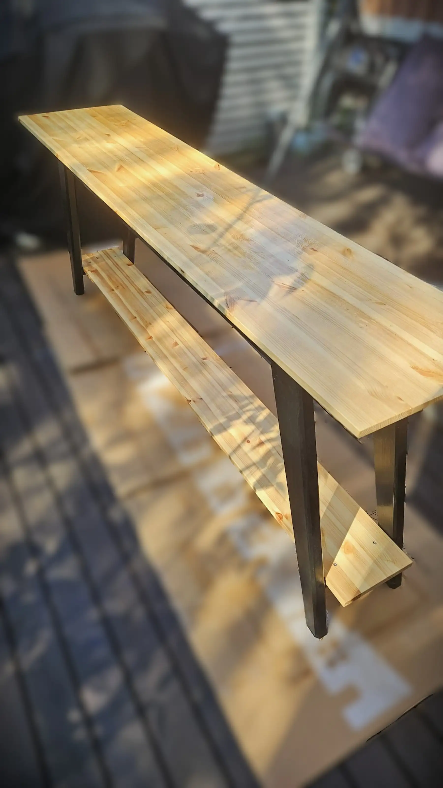
Männystä valmistettu ikkunan alle mahtuva kukkapöytä.
Koko n. 30 x 140 x 80 cm
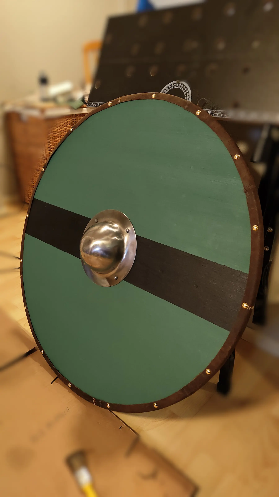
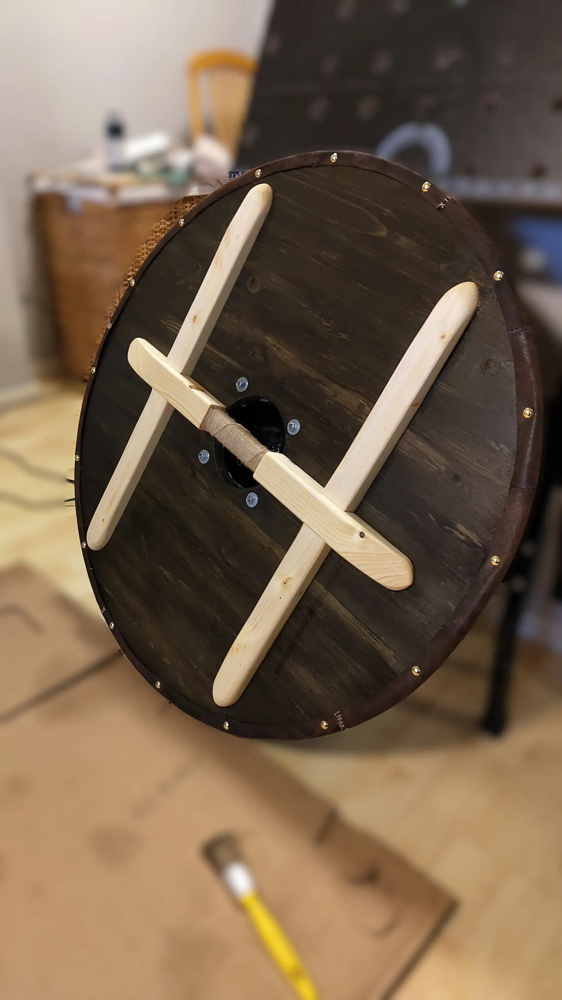
Aidohko viikinkikilpi oikeissa mitoissa!
Miehekäs koriste seinälle!
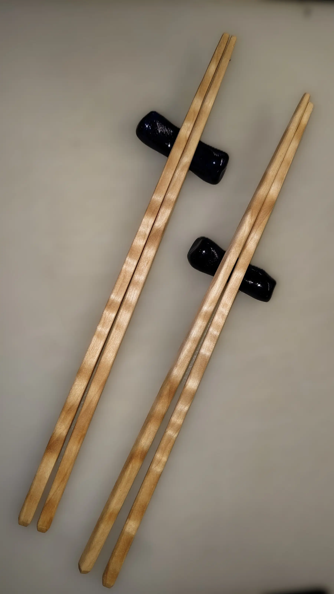
Aaltokoivusta valmistetut syömäpuikot.
Oli muuten näpertämistä!
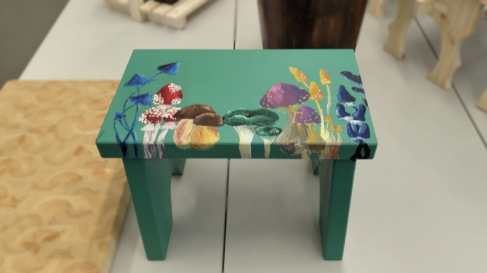
Jakkara, joka käyttötarkoitustaan ei ole vielä päättänyt.
Kuvitettuna muodokkailla sienillä!
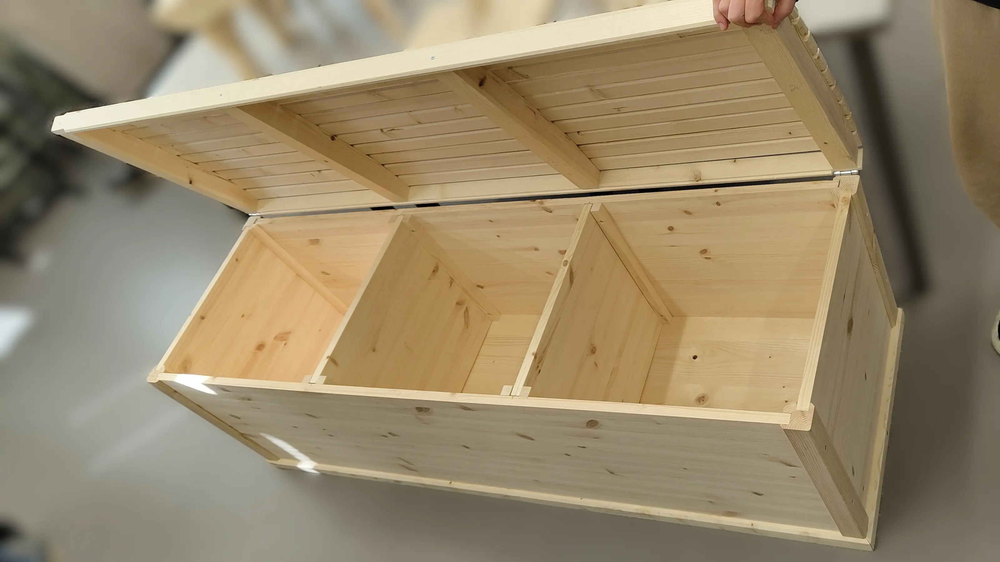
Männystä ja kuusesta valmistettu liinavaatearkku.
Keskeneräinen kapistus... tulee valmiiksi kun ehtii koodauksen yhteydessä...